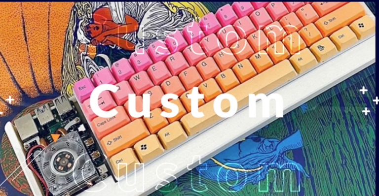
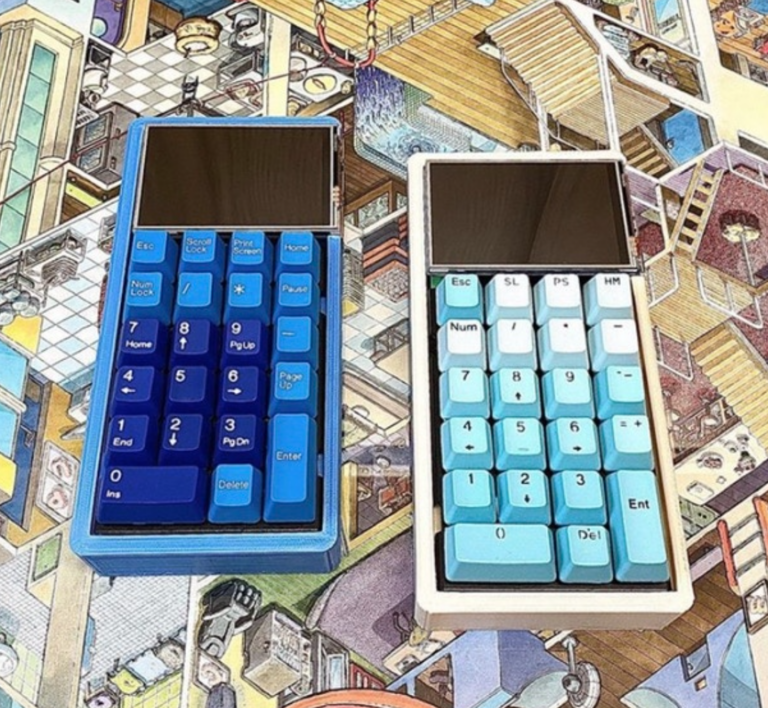

Manchmal findet man auf Kickstarter ja Dinge welche eigentlich zu simpel sind, dass es Produkte sein müssten, dennoch so nützlich sein könnten, dass man sie gerne hätte.
So erging es mir bei einer Tastatur mit integrierten, fullsize, Raspberry Pi Case names K100 Keyboard Computer.

Durch den offenliegenden Pi hätte man hier Pi HATs einfach direkt anstecken können. Entweder zum Entwickeln und Testen oder als Feature der Tastatur – zum Beispiel mit einem kleinen Display, oder Indicator-Lights für sonst etwas.
Nichtsdestotrotz, ich glaube wer einen 3D Drucker besitzt und eine Vorliebe für mechanische Taste hat kann sich so etwas auch selber bauen. Natürlich müsste man dann eventuell auf Funktionen wie LED-beleuchtete Tasten und Co. verzichten. Ich wäre bereit dazu xD
Auf der Kickstarter-Seite wurden ebenfalls noch alternative Gehäuse dargestellt. Eins davon war gedacht für einen grafischen Taschenrechner. DAS wäre halt wirklich awesome gewesen. Hier gilt jedoch auch, wer drucken kann, der kann auch …

Back